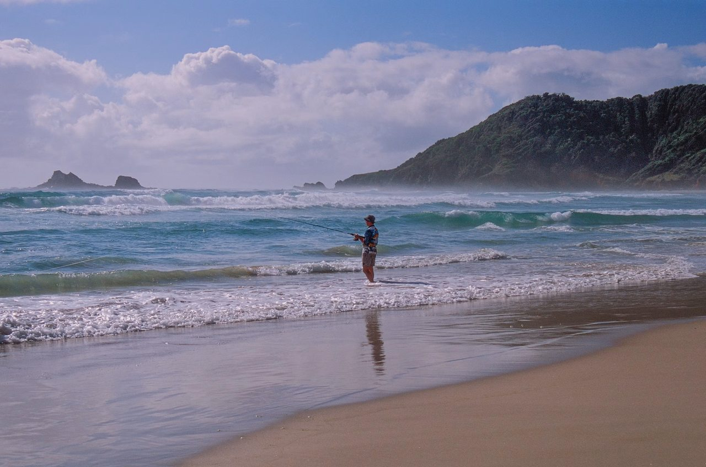
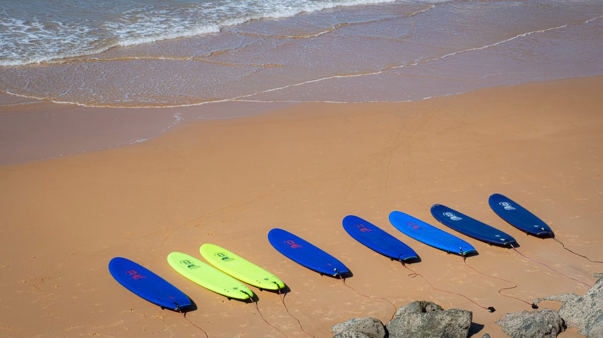
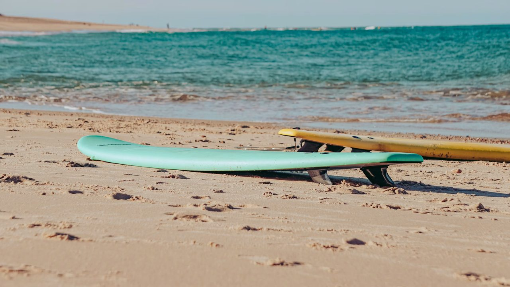
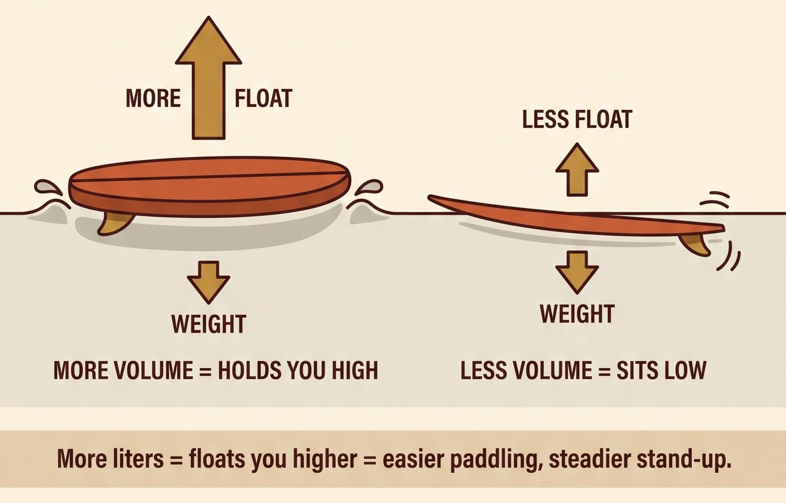
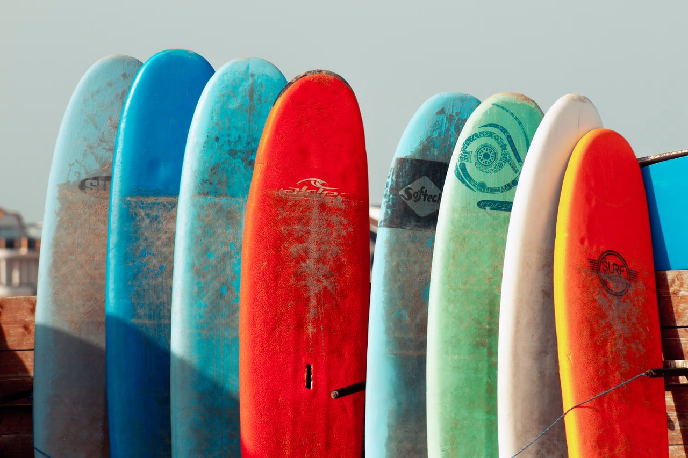
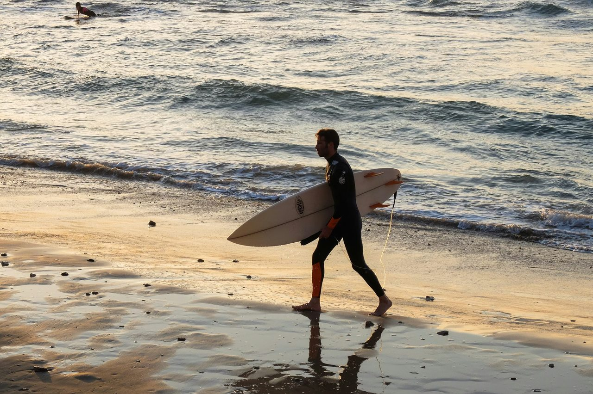

PICK YOUR FIRST SURFBOARD
What This Guide Covers
More waves. More fun. Start with the right board.

- Do NOT buy the cool-looking board first
- Start big, wide, and floaty
- What volume means
- The main board types
- Your first-board checklist
Do NOT Buy the Cool-Looking Board First

Most new surfers see shortboards in surf videos and assume that is where they should begin. But a small performance board is harder to paddle, harder to balance on, and harder to catch waves with.
Your first board should make learning easier. Start with a board that gives you stability, float, and enough paddle power to catch smaller waves. Surfing becomes a lot more fun when you are actually standing up instead of watching every wave pass by.
- Bigger boards are more stable
- More float helps you paddle and catch waves
- Wider boards are easier to stand on
- Your first board should help you learn—not impress strangers
Do NOT Buy the Cool-Looking Board First
Start Big, Wide, and Floaty

For most complete beginners, a soft-top board around 8 feet or longer is a strong place to start. It is not a hard rule—your height, weight, athletic background, swimming confidence, and the waves you surf all matter—but more board usually makes the learning stage easier.
A larger board paddles more efficiently, catches waves earlier, and gives you a wider, more stable platform when it is time to stand up. Soft construction also makes the board more forgiving around other people in the water than a hard fiberglass board.
- Soft-top or foam construction for a forgiving first board
- About 8 feet or longer for many adult beginners
- A wide outline for stability
- Plenty of volume for float and easier paddling
- Bigger may be better if you are a larger rider or surf smaller, slower waves
Start Big, Wide, and Floaty
What Surfboard Volume Means

Surfboard volume is usually measured in liters. In simple terms, it tells you how much water the board displaces and how much float it provides.
A higher-volume board sits higher in the water, paddles more easily, and catches waves sooner. A lower-volume board is generally more responsive once you know what you are doing, but it takes more skill and stronger paddling to get into waves.
You do not need to memorize a complicated formula before your first session. Just remember this: as a beginner, extra volume is usually your friend.
- Higher volume equals more float
- More float helps paddling
- More float helps you catch waves earlier
- Lower-volume boards are usually less forgiving
- Volume is one reason bigger beginner boards work so well
What Surfboard Volume Means
The Main Board Types — In Plain English

Surfboards come in many shapes, but you only need to know a few basic groups at the beginning.
Soft-tops are forgiving and commonly used for learning. Longboards are stable and good at catching smaller waves. Funboards and mid-lengths sit between longboards and shortboards, offering a mix of paddle power and maneuverability. Shortboards are designed for quicker turns and steeper waves, but they require more experience.
Start with the board that matches your current skill—not the board you hope to ride after years of practice.
- Soft-top: Best starting point for many first-time surfers
- Longboard: Stable, easy paddling, great for smaller waves
- Funboard or mid-length: A step toward more maneuverability
- Shortboard: More performance, less forgiveness
- Fish: Wide and fast, but generally better after basic skills are solid
The Main Board Types — In Plain English
Your First-Board Checklist

Before you rent or buy, think about where you will surf most often. Small, mellow beach breaks call for a different board than powerful reef waves or a fast point break.
For a first board, keep the decision simple. Choose something stable, buoyant, durable, and appropriate for the conditions. If you are unsure, rent first or ask a local shop or surf instructor before spending money.
The right beginner board gives you enough support to practice the basics: paddling, timing your takeoff, standing up, riding straight, and learning control.
- Start with a soft-top, foamie, or larger longboard
- Choose length, width, and volume for stability
- Consider the waves you will surf most often
- Buy or rent a leash that matches the board length
- Inspect the board for cracks, damaged fins, or sharp edges
- Ask a local surf shop or instructor when unsure
- Rent before buying if you are still learning what feels right